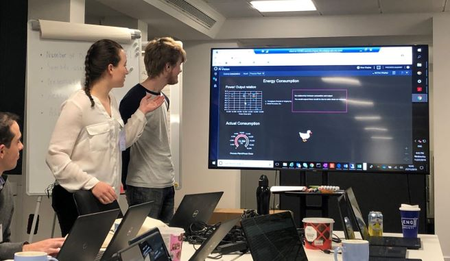

About Me

I am a penultimate year MEng Chemical Engineering Student at Imperial College London.
Passionate about creating change and improving preexisting ideas; I plan to accomplish this by improving efficiency on both a physical level and also by leveraging the power of new technology such as computers to optimise processes.
This is what will be needed in the future to protect the environment for the future whilst keeping the needs and production of today.
I am a fast learner who sticks to deadlines, producing high quality work and new ways of thinking. I have a keen interst in nanotechnology and its potential widespread application to the future.
Past experiences

Undegraduate Researcher - Restructured the Mathematics 2 module with an emphasis on creating an online homework system using WebWorks. Questions were both drawn from a log on the site and hand added to meet our requiremnets. This involved formulating the question then coding into the site which used Perl, HTML and LaTeX.
Student Trainer- Teaching a leadership course to university students in groups of up to 30. The main modules of the course taught by myself were "Inclusitiviy" and "Exploring leadership". Other modules predominantly taught by other staff however all module submitions were marked by the team so I gained experience in the delivery of all modules.
This list is not exhastive and is intended as a practice for HTML programming
Hobbies

Member of Imperial Lacrosse Team- Playing BUCS matches in both Womens and Mixed Lacross Teams
Coding - Hence the coding of this ";)"
Game building- Using Unity